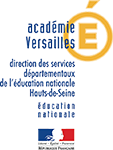

L'opération "Ecole et cinéma", coordonnée par l'association Les Enfants de cinéma, propose aux élèves des écoles primaires de découvrir des œuvres cinématographiques lors de projections organisées spécialement à leur intention dans les salles de cinéma et de se constituer ainsi, dans le cadre d'un travail pédagogique d'accompagnement conduit par les enseignants et les partenaires culturels, les bases d'une culture cinématographique.